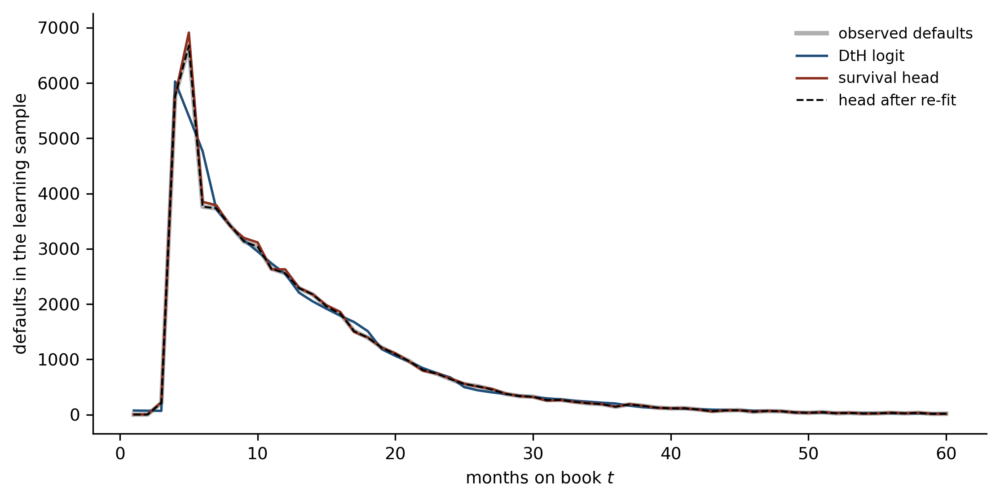
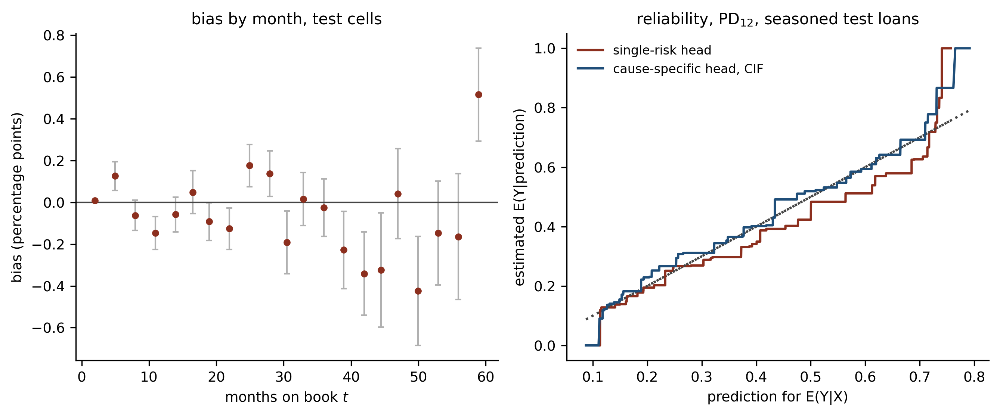

Deep Learning for Actuarial Modelling: a credit risk companion
Author
Mario Ervedosa
Published
September 2, 2026
Abstract
Lecture S1 showed that a discrete-time hazard model is a logistic regression on a person-period expansion. Replacing that logistic regression with a network is therefore a one-line change, and this lecture makes it. It builds a survival head that emits one logit per month, so the whole term structure arrives in a single forward pass and the 2.7 million person-period rows are never materialised, then asks of that head the two questions lecture 7 of the summer school asks of a PD head. The balance property turns out to hold at whatever resolution the model was given and nowhere finer, and enforcing it at every month leaves the twelve-month PD still overstated by 2.4 percentage points. Widening the same head to two causes cuts that to 0.8, because the residue was never a calibration failure. It closes on DeepSurv and DeepHit, and on why neither is fitted here. This lecture answers no summer school lecture; it completes the survival track S1 opened.
1 Where lecture S1 stopped
Lecture S1 ended on a specification borrowed from Botha and Verster (2025, Eq. 14), in which the discrete-time hazard of default is a logistic regression on a person-period expansion,
with \(\boldsymbol{E}_{i}\) the period indicators forming the baseline hazard and \(\boldsymbol{x}_{i}\) the application covariates. Everything on the right of that inverse logit is linear, and the summer school spent lectures 4 and 5 establishing what happens when the linear predictor of a generalised linear model is replaced by a feed-forward network. Consequently the deep-learning version of a survival model is available immediately:
where \(\boldsymbol{z}\) is the feature extractor of lecture 4 and the readout now carries one weight vector and one intercept per month rather than one of each. That is the entire architectural idea, and the rest of this lecture is about what it costs and what it buys.
Two questions follow it, and they are the ones the summer school’s seventh lecture puts to any network. Does the balance property survive? And is the fitted model auto-calibrated? Credit lecture 4 and 5 found the balance property to be the first casualty of moving from a GLM to a network on a twelve-month PD. A survival head raises the same question at sixty horizons at once, which turns a single condition into a family of them.
The reader is assumed to hold lecture S1 and the feed-forward material of credit lectures 4 and 5. Notation carries over unchanged: \(t\) for months on book, \(k\) for the horizon being asked about, \(q_{i,t}\) for the discrete default hazard, and \({}_k p_{i} = \prod_{t \le k} (1 - q_{i,t})\) for survival to \(k\) months.
import timeimport numpy as npimport polars as plimport pandas as pdimport torchimport matplotlib.pyplot as pltimport statsmodels.api as smimport statsmodels.formula.api as smffrom scipy.optimize import brentqfrom sklearn.metrics import roc_auc_scoreplt.rcParams.update({"figure.figsize": (9, 4), "figure.dpi": 150, "font.size": 9,"axes.spines.top": False, "axes.spines.right": False,})OX, GREY, RULE, BLUE ="#8C2F1E", "#B0B0B0", "#444444", "#1F4E79"torch.set_num_threads(4)HORIZON =60# months, as in lecture S1surv = pl.read_parquet("../data/bondora_survival.parquet")base = (surv.filter(pl.col("Age").is_not_null() & (pl.col("IncomeTotal") >0)) .with_columns(logIncome=pl.col("IncomeTotal").log()))print(f"loans after lecture 1's cleaning filter: {base.height:,}")
loans after lecture 1's cleaning filter: 179,171
2 One logit per month
2.1 The masking identity
The person-period expansion of lecture S1 turned 179,171 loans into 2.7 million loan-months, one row per month at risk. That reshaping is what let a logistic regression fit a hazard, and it is also the reason a naive neural version is wasteful: each of a loan’s rows carries the same covariates, so the feature extractor would recompute \(\boldsymbol{z}(\boldsymbol{x}_i)\) once per month of that loan’s life.
The wide-output head removes the duplication. Give the network \(m = 60\) output units, read output \(t\) as the logit of \(q_{i,t}\), and evaluate the loss only on the months during which loan \(i\) was actually at risk. Writing \(r_{i,t} = 1\) for a month at risk and \(y_{i,t}\) for the event history indicator of Singer and Willett (1993), the objective is
which is the person-period Bernoulli log-likelihood term for term. Nothing has been approximated, and the mask \(r_{i,t}\) is doing exactly the work that dropping a row from the expansion did. Gensheimer and Narasimhan (2019) give this construction its usual name in the literature, a discrete-time survival neural network.
Hence the comparison against lecture S1’s logit is exact rather than indicative: the two models optimise the same objective over the same cells and differ only in the functional form allowed between the covariates and the logit. Section 4.2 verifies that claim numerically rather than leaving it as an argument.
def masks(df, horizon=HORIZON):"""At-risk indicator and the two event-history indicators, all n by m.""" t = df["t_obs_m"].to_numpy().clip(max=horizon +1) kind = df["exit_kind"].to_numpy() grid = np.arange(1, horizon +1)[None, :] at_risk = (grid <= np.minimum(t, horizon)[:, None]).astype(np.float32) y_def = ((grid == t[:, None]) & (kind =="default")[:, None]).astype(np.float32) y_set = ((grid == t[:, None]) & (kind =="settled")[:, None]).astype(np.float32)return at_risk, y_def, y_setM, Yd, Ys = masks(base)print(f"matrix is {M.shape[0]:,} by {M.shape[1]}, of which "f"{int(M.sum()):,} cells are at risk")print(f"defaults {int(Yd.sum()):,} settlements {int(Ys.sum()):,}")
matrix is 179,171 by 60, of which 2,671,330 cells are at risk
defaults 71,180 settlements 41,115
The at-risk cell count reproduces the person-period row count of lecture S1 exactly, which is the check that the mask was built correctly.
2.2 Architecture
The covariates are lecture S1’s, namely borrower age, log income and country, so that the only difference between the two models is the functional form. Country enters through a two-dimensional embedding in the manner of the summer school’s sixth lecture, and the two continuous covariates are standardised on the training partition.
Xc = np.column_stack([base["logIncome"].to_numpy(), base["Age"].to_numpy().astype(float)])codes = pl.Series(base["Country"]).cast(pl.Categorical).to_physical().to_numpy().astype(np.int64)n_country =int(codes.max()) +1class SurvivalHead(torch.nn.Module):"""Feature extractor shared across months; one output logit per month."""def__init__(self, n_cont, n_levels, horizon=HORIZON, widths=(20, 15, 10), emb=2, seed=7):super().__init__() torch.manual_seed(seed)self.emb = torch.nn.Embedding(n_levels, emb) layers, prev = [], n_cont + embfor w in widths: layers += [torch.nn.Linear(prev, w), torch.nn.Tanh()] prev = wself.body = torch.nn.Sequential(*layers)self.out = torch.nn.Linear(prev, horizon)self.out.bias.data.fill_(-5.0) # start near a low hazard, not near a halfdef forward(self, xc, xk):returnself.out(self.body(torch.cat([xc, self.emb(xk)], dim=1)))def masked_deviance(logits, y, m):"""Bernoulli deviance per at-risk cell, times 100.""" bce = torch.nn.functional.binary_cross_entropy_with_logits(logits, y, reduction="none")return200.0* (bce * m).sum() / m.sum()
The output bias is initialised at \(-5\) rather than at zero. Default is a rare event month by month, so an untouched linear layer starts every hazard near a half and the first epochs are spent undoing that.
3 Fitting it on Bondora
3.1 Splits and training
The splits are those of credit lecture 4 and 5, with the same seeds: an 80/20 random split, and an out-of-time split at the 0.8 quantile of origination dates. The training recipe is also theirs, namely a 90/10 partition of the learning sample, NAdam over mini-batches of 5,000 loans, and early stopping by checkpointing on the validation deviance. Training runs on the CPU with every seed fixed, so the figures below reproduce on re-render.
parameters 1,243, 60 outputs; validation optimum at epoch 90 of 120 run in 9s
The parameter count is worth a moment. A network of the same depth and width fitted to a twelve-month PD in credit lecture 4 and 5 carried 1,266 parameters and produced one number per loan. This one carries a comparable total and produces sixty, because the extra cost sits entirely in the readout, at \(10 \times 60 + 60 = 660\) weights against the single readout’s \(11\). The feature extractor, which is where the depth lives, is shared across every month.
Training and validation deviance per at-risk cell by epoch on the random split. The validation curve bottoms out at the epoch marked by the dashed line and the checkpoint at that epoch is the parameter retained. The shape is the one credit lecture 4 and 5 found for the twelve-month PD network, which is expected: masking changes which cells enter the loss and changes nothing about the optimisation.
3.2 The benchmarks
Two benchmarks matter. The first is lecture S1’s discrete-time hazard logit, refitted here on the same learning sample so the comparison is like for like. The second is the marginal Kaplan-Meier hazard applied to every loan, which is the survival analogue of the null model and sets the deviance a model with no covariates achieves.
BANDS = [0, 3, 6, 9, 12, 18, 24, 36, 48, 60]BAND_LABELS = [f"{a +1}-{b}"for a, b inzip(BANDS[:-1], BANDS[1:])]AGE_CUTS = [18, 20, 25, 30, 40, 50, 60, 70, 101]AGE_LABELS = ["18-20", "21-25", "26-30", "31-40", "41-50", "51-60", "61-70", "71+"]frame = base.select(["Age", "logIncome", "Country", "t_obs_m", "exit_kind"]).to_pandas()frame["AgeClass"] = pd.cut(frame["Age"], AGE_CUTS, labels=AGE_LABELS, include_lowest=True)def expand(idx):"""Lecture S1's person-period expansion, restricted to a sample.""" sub = frame.iloc[idx] n = np.minimum(sub["t_obs_m"].to_numpy(), HORIZON) out = sub.iloc[np.repeat(np.arange(len(sub)), n)].copy() out["t"] = np.concatenate([np.arange(1, j +1) for j in n]) out["y"] = ((out["t"] == out["t_obs_m"])& (out["exit_kind"] =="default")).astype(float) out["period"] = pd.cut(out["t"], BANDS, labels=BAND_LABELS)return outdef fit_logit(idx): model = smf.glm("y ~ C(period) + AgeClass + logIncome + Country - 1", data=expand(idx), family=sm.families.Binomial()).fit() out = np.empty((len(frame), HORIZON))for k inrange(1, HORIZON +1): grid = frame.copy() grid["period"] = pd.cut([k] *len(frame), BANDS, labels=BAND_LABELS) out[:, k -1] = model.predict(grid).to_numpy()return model, outdth, q_logit = fit_logit(idx_learn)print(f"logit fitted on {int(dth.nobs):,} loan-months")def life_table(idx, horizon=HORIZON): t = frame["t_obs_m"].to_numpy()[idx].clip(max=horizon +1) kind = frame["exit_kind"].to_numpy()[idx] months = np.arange(1, horizon +1) n = np.array([(t >= x).sum() for x in months], dtype=float) d = np.array([((t == x) & (kind =="default")).sum() for x in months], dtype=float) s = np.array([((t == x) & (kind =="settled")).sum() for x in months], dtype=float)return months, n, d, smonths, n_k, d_k, s_k = life_table(np.arange(base.height))q_km = d_k / n_kS_km = np.cumprod(1- q_km)S_any_np = np.cumprod(1- q_km - s_k / n_k)cif_km = np.cumsum(np.concatenate([[1.0], S_any_np[:-1]]) * q_km)def null_hazards(idx): _, n, d, _ = life_table(idx)return np.tile(d / n, (len(frame), 1))def deviance(q, idx): eps =1e-12 p = np.clip(q[idx], eps, 1- eps) y, m = Yd[idx], M[idx]return200.0* (-(y * np.log(p) + (1- y) * np.log(1- p)) * m).sum() / m.sum()q_null = null_hazards(idx_learn)print("\ndeviance per at-risk cell, random split")for label, q in (("null (Kaplan-Meier hazards)", q_null), ("DtH logit (lecture S1) ", q_logit), ("survival head ", q_net)):print(f" {label}: learn {deviance(q, idx_learn):7.4f} "f"test {deviance(q, idx_test):7.4f}")
logit fitted on 2,139,407 loan-months
deviance per at-risk cell, random split
null (Kaplan-Meier hazards): learn 23.1779 test 23.3636
DtH logit (lecture S1) : learn 22.1926 test 22.3360
survival head : learn 22.0176 test 22.1848
The head improves on the logit out of sample, and the margin is best read against what there was to win. The null model leaves 1.1788 of deviance for the head to explain and 1.0276 for the logit, so the network recovers about fifteen per cent more of the covariate signal than the linear predictor does. That is a smaller advantage than the summer school’s French motor example produces, which is what three covariates and four countries should be expected to yield.
3.3 The term structure
One fitted model now delivers a PD at every horizon, per loan. Chaining the predicted hazards and averaging over the portfolio gives the term structure of default risk, directly comparable with the two estimators of lecture S1.
(lhs): the fitted hazard by month, averaged over the loans at risk in that month, against the marginal Kaplan-Meier hazard. The logit’s baseline is banded into nine intervals and steps accordingly; the head carries one output per month and traces the lifecycle continuously. (rhs): the term structure of cumulative default risk. All three curves treat early repayment as censoring, and the cumulative incidence curve beneath them is the correction section 5 fits directly.
The left panel shows what the extra fifty-one output units bought. The logit’s baseline is a step function on nine bands, so its fitted hazard is flat across months four to six and again across months thirteen to eighteen, moving only as the composition of the risk set moves, whereas the head follows the peak at month five and the decline after it month by month. The right panel shows what they did not buy. The three cumulative curves span 0.14 percentage points at twelve months and 0.71 at sixty, because all three are anchored to the same marginal event counts.
One cost of the wide readout is visible in the same panel. Beyond month forty-eight the head follows the month-to-month jitter of the Kaplan-Meier hazard rather than smoothing through it, which is what a free parameter per month permits when the risk set has thinned to a few thousand loans. Early stopping limits that and does not remove it, and a penalty on the differences \(\alpha_{t+1} - \alpha_t\) would be the natural remedy, in the spirit of the regularisation lecture 8 applies to an ICE network.
3.4 Does the advantage survive the out-of-time split?
Credit lecture 4 and 5 asked this of the twelve-month PD network and found the advantage narrowed. The same question is sharper here, since the out-of-time test loans are recent and therefore observed for only a few months each, so the test cells sit overwhelmingly in the low-hazard first year and the deviance level is not comparable across the two splits.
out-of-time refit in 35s, validation optimum at epoch 102 of 132
deviance per at-risk cell, out-of-time split
null : learn 24.3659 test 9.8664
DtH logit : learn 23.3967 test 8.4869
survival head: learn 23.2195 test 8.3545
The ordering holds. Measured against the null, the head recovers 1.5119 of test deviance and the logit 1.3795, so the network’s edge falls from about fifteen per cent of the explained deviance on the random split to about ten out of time. Consequently the flexibility is genuine and it is also partly a fit to the vintages present in the learning sample, which is the finding credit lecture 4 and 5 reached by a different route.
4 Three balance conditions
Lecture 7 of the summer school states the balance property for a fitted model as the requirement that predictions add up to observations on the learning sample. A survival head admits three distinct readings of that requirement, and a model can satisfy any one of them while failing the others.
NoteThe three conditions
Write \(\mathcal{R}\) for the set of at-risk cells \((i, t)\) in the learning sample.
Overall balance.\(\sum_{(i,t) \in \mathcal{R}} \hat q_{i,t} = \sum_{(i,t) \in \mathcal{R}} y_{i,t}\). The model reproduces the total number of defaults.
Balance per period. For every month \(t\), \(\sum_{i : (i,t) \in \mathcal{R}} \hat q_{i,t} = \sum_{i : (i,t) \in \mathcal{R}} y_{i,t}\). The model reproduces the term structure of event counts, which is \(m\) conditions rather than one.
Balance at horizon \(k\).\(\frac{1}{n} \sum_{i} \left( 1 - \prod_{t \le k} (1 - \hat q_{i,t}) \right)\) equals the observed \(\mathrm{PD}_k\). This is the condition a credit team reports against, and it is the one that does not follow from the others.
4.1 What each model satisfies
L = idx_learndef balance(label, q): pred_cell = (q[L] * M[L]).sum(0) obs_cell = (Yd[L] * M[L]).sum(0) worst =int(np.argmax(np.abs(pred_cell - obs_cell))) band = pd.cut(months, BANDS, labels=BAND_LABELS).astype(str) bp = pd.Series(pred_cell).groupby(band, observed=True).sum() bo = pd.Series(obs_cell).groupby(band, observed=True).sum()print(f"{label}")print(f" overall : {pred_cell.sum():10,.1f} predicted against "f"{obs_cell.sum():10,.1f} observed, ratio {pred_cell.sum() / obs_cell.sum():.4f}")print(f" per band : largest absolute gap {np.abs(bp - bo).max():9,.3f}")print(f" per month : largest absolute gap {np.abs(pred_cell - obs_cell).max():9,.1f} "f"(month {worst +1}), mean {np.abs(pred_cell - obs_cell).mean():.1f}")return pred_cell, obs_cellpred_net, obs_cell = balance("survival head", q_net)pred_log, _ = balance("DtH logit ", q_logit)
survival head
overall : 57,569.5 predicted against 56,893.0 observed, ratio 1.0119
per band : largest absolute gap 336.061
per month : largest absolute gap 238.0 (month 5), mean 15.2
DtH logit
overall : 56,893.0 predicted against 56,893.0 observed, ratio 1.0000
per band : largest absolute gap 0.000
per month : largest absolute gap 1,273.5 (month 5), mean 72.6
Each reading returns a different verdict. The logit satisfies overall balance to the last decimal, because a generalised linear model with a canonical link and a full set of categorical indicators has the balance property built into its score equations, which is the result lecture 7 proves. It satisfies balance per band for the same reason, exactly. Nevertheless it misses balance per month by up to 1,273 defaults, because its baseline was banded into nine intervals and a step function cannot match sixty targets.
The head fails all three, overstating the learning sample’s defaults by 676.5 on 56,893, a ratio of 1.0119. Yet its largest monthly gap is 238.0 against the logit’s 1,273.5, and its mean monthly gap is 15.2 against 72.6. Hence the two models fail in opposite directions: the logit is exactly right at the resolution it was given and badly wrong beneath it, while the head is approximately right everywhere and exactly right nowhere.
That contrast generalises past this dataset. A GLM’s balance property is a property of the partition its indicators define, so it says nothing about any cell finer than that partition. The temptation is to read a satisfied balance condition as evidence of calibration at every resolution, and a banded baseline is precisely where that reading breaks.
4.2 The readout re-fit
The correction credit lecture 4 and 5 applied to the PD network was a GLM readout re-fit, which holds the learned representation fixed and refits the final linear layer. Its survival analogue is one scalar offset per month, added to the network’s logit, chosen so that month \(t\) balances:
The left side is strictly increasing in \(\alpha_t\) and the right side is a constant, so each \(\alpha_t\) is the unique root of a one-dimensional monotone equation and bisection finds it to machine precision. This is exactly the fit of a saturated period-indicator logistic regression with the network’s logit as an offset, obtained without building the 2.1 million-row design matrix such a fit would need.
def readout_refit(logits, idx): alpha = np.zeros(HORIZON)for t inrange(HORIZON): m, eta, y = M[idx][:, t], logits[idx][:, t], Yd[idx][:, t] target = (y * m).sum()if target ==0: alpha[t] = np.nan # no events: the offset is not identifiedcontinue f =lambda a: (m / (1+ np.exp(-(eta + a)))).sum() - target alpha[t] = brentq(f, -20, 20, xtol=1e-12)return alphaalpha = readout_refit(logit_net, L)unidentified = np.where(np.isnan(alpha))[0] +1print(f"months with no learning-sample defaults, offset not identified: "f"{unidentified.tolist()}")alpha_filled = np.where(np.isnan(alpha), 0.0, alpha)print(f"offsets elsewhere: min {np.nanmin(alpha):+.4f} max {np.nanmax(alpha):+.4f} "f"median {np.nanmedian(alpha):+.4f}")q_bal =1/ (1+ np.exp(-(logit_net + alpha_filled[None, :])))pred_bal, _ = balance("head, after re-fit", q_bal)print(f"\ntest deviance: head {deviance(q_net, idx_test):.4f}, "f"after re-fit {deviance(q_bal, idx_test):.4f}")
months with no learning-sample defaults, offset not identified: [1]
offsets elsewhere: min -0.8367 max +0.1808 median -0.0071
head, after re-fit
overall : 56,895.1 predicted against 56,893.0 observed, ratio 1.0000
per band : largest absolute gap 2.097
per month : largest absolute gap 2.1 (month 1), mean 0.0
test deviance: head 22.1848, after re-fit 22.1822
Balance now holds at every identified month to the precision of the root finder, and the 2.1 defaults still unaccounted for overall are month one alone. The out-of-sample deviance moves by 0.003, which is noise at this scale. Furthermore the offsets are small, with a median of \(-0.007\) on the logit scale, so the re-fit is a nudge rather than a rebuild.
Those offsets also verify the masking identity of section 2.1. Fitting the same model the other way, as a person-period logistic regression on the expanded rows with the network’s logit as an offset, must return the same coefficients if the two objectives really are the same function. The check runs on a subsample so the design matrix stays small.
check = np.random.default_rng(11).choice(base.height, 5000, replace=False)CHECK_M =24rows, cols = np.nonzero(M[check][:, :CHECK_M])identified = [t for t inrange(1, CHECK_M +1) if (Yd[check][:, t -1] * M[check][:, t -1]).sum() >0]pp = pd.DataFrame({"y": Yd[check][:, :CHECK_M][rows, cols],"month": pd.Categorical(cols +1),"off": logit_net[check][:, :CHECK_M][rows, cols]})pp = pp[pp["month"].isin(identified)]pp["month"] = pp["month"].cat.remove_unused_categories()by_glm = smf.glm("y ~ C(month) - 1", data=pp, family=sm.families.Binomial(), offset=pp["off"]).fit()by_bisection = readout_refit(logit_net, check)[[t -1for t in identified]]gap = np.abs(by_bisection - by_glm.params.to_numpy()).max()print(f"{len(pp):,} person-period rows, {len(identified)} identified months")print(f"largest gap between the two routes to the same offsets: {gap:.2e}")
55,021 person-period rows, 22 identified months
largest gap between the two routes to the same offsets: 1.54e-07
The two agree to the tolerance of the generalised linear model’s own iteration, so the masked objective and the person-period likelihood are the same function fitted two ways.
Month one is the exception and it is the same exception lecture S1 met when it fitted a saturated baseline. No loan in the learning sample defaults in its first month, so exact balance there requires a hazard of zero and the offset runs to minus infinity. The month is left at the network’s own value and flagged rather than clamped silently.
fig, ax = plt.subplots(figsize=(7.5, 3.8))ax.plot(months, obs_cell, color=GREY, lw=2.4, label="observed defaults")ax.plot(months, pred_log, color=BLUE, lw=1.3, label="DtH logit")ax.plot(months, pred_net, color=OX, lw=1.3, label="survival head")ax.plot(months, pred_bal, color="black", lw=1.0, ls="--", label="head after re-fit")ax.set_xlabel("months on book $t$"); ax.set_ylabel("defaults in the learning sample")ax.legend(frameon=False, fontsize=8); plt.tight_layout(); plt.show()

Predicted against observed default counts per month on the learning sample. The logit’s banded baseline forces a step function through the peak at month five, which is where its largest errors sit; the head tracks the shape without matching any month exactly; the re-fitted head matches every month by construction, so its dashed line traces the observed curve throughout.
4.3 Why balance at horizon \(k\) does not follow
Enforcing every monthly condition still leaves the third condition open, and the reason is the survival product itself. Balance is a statement about a sum of hazards, whereas \(\mathrm{PD}_k\) is built from a product of them, and averaging does not pass through a product.
q_bar = pred_bal / M[L].sum(0) # balanced mean hazard per monthS_bar = np.cumprod(1- q_bar) # chain the average hazardsS_ind = np.cumprod(1- q_bal[L], axis=1).mean(0) # average the chained loansfor k in (12, 60):print(f"k = {k:2d}: product of the balanced mean hazards "f"{1- S_bar[k-1]:.4f} average of the individual products "f"{1- S_ind[k-1]:.4f} gap {100* (S_ind[k-1] - S_bar[k-1]):+.3f}pp")
k = 12: product of the balanced mean hazards 0.3068 average of the individual products 0.3023 gap +0.453pp
k = 60: product of the balanced mean hazards 0.7151 average of the individual products 0.7126 gap +0.250pp
The two differ by 0.45 percentage points at twelve months and 0.25 at sixty. The sign is the one heterogeneity predicts: a loan whose hazard is persistently above average contributes a small survival factor in every month, and the product punishes it more than the average of the monthly hazards suggests, so the cohort as a whole survives slightly better than the chained mean hazard implies.
The magnitude is modest here because the fitted hazards are dispersed only as far as three covariates and four countries can disperse them. On a scorecard with a real range of risk grades the same mechanism would bite harder, and it does not go away by fitting the model better. Hence a survival head can be calibrated month by month and still report a lifetime PD that misses, which is a property of the estimand rather than a defect of the estimator.
5 Two causes in one head
Every hazard above treated a settled loan as censored, and lecture S1 measured what that costs: 3.05 percentage points at twelve months and 16.99 at sixty. The fix lecture S2 set out is to model the two exits jointly rather than to remove one of them from the risk set.
The wide-output head extends to that directly. Emit two logits per month rather than one, append a fixed zero for the survive category, and take a softmax over the three:
with the multinomial log-likelihood over at-risk cells replacing the Bernoulli one. The two outputs are then the cause-specific discrete hazards of lecture S2, and the Aalen-Johansen recursion turns them into a cumulative incidence function per loan,
parameters 1,903, 120 outputs; validation optimum at epoch 276 of 306 run in 58s
identity check, CIF_def + CIF_set + S_any = 1.000000002
k = 12: model CIF 0.2711 Aalen-Johansen 0.2771 difference -0.60pp
k = 60: model CIF 0.5436 Aalen-Johansen 0.5469 difference -0.33pp
The three probabilities sum to one to eight decimal places, which is the completeness check lecture S1 applied to the non-parametric estimator, now applied to a network. The fitted cumulative incidence sits within 0.60 percentage points of Aalen-Johansen at twelve months and 0.33 at sixty, so the head recovers the non-parametric estimate while adding what the non-parametric estimator cannot supply, namely a curve per loan.
The same head also settles the question lecture S1 left open, because it can be read two ways. Chaining \(1 - q^{\text{def}}\) alone reproduces the latent risks treatment, in which settlement is censoring; taking the cumulative incidence respects the competing risk.
One fitted model, one set of parameters, and a difference of 17.1 percentage points at sixty months depending only on which quantity is read off it. Lecture S1 measured the same gap non-parametrically at 16.99, so the network has reproduced it rather than invented it.
Cumulative incidence from the cause-specific head against the non-parametric Aalen-Johansen estimator of lecture S1. The upper pair is default, the lower pair settlement, and the dotted line is the same head read as latent risks, meaning with settlement treated as censoring. The vertical distance between the dotted line and the default curve is the competing-risks correction, worth 17.1 percentage points at sixty months.
6 Calibration where it counts
6.1 The seasoned sample verdict
Lecture S1 built its test on the one sample where the twelve-month default rate is counted rather than estimated. On lecture 1’s seasoned loans every outcome window has closed, so no loan is administratively censored inside twelve months and the observed rate needs no estimator at all. Restricting that sample to the random split’s test loans gives an honest out-of-sample target for every model in this lecture.
seasoned test loans 29,730; observed 12-month default rate 0.2917
survival head : mean 0.3199 bias +2.82pp AUC 0.7126
survival head, re-fit : mean 0.3159 bias +2.41pp AUC 0.7126
DtH logit (lecture S1) : mean 0.3190 bias +2.73pp AUC 0.7112
cause-specific head CIF: mean 0.2837 bias -0.80pp AUC 0.7127
That table is the lecture’s argument in four rows. The survival head overstates the twelve-month PD by 2.82 percentage points. The readout re-fit, which imposed exact balance at every month of the learning sample, takes that to 2.41 and no further. The lecture S1 logit, which had exact overall balance by construction, sits at 2.73. The cause-specific head, which was never recalibrated at all, comes in at \(-0.80\).
Recalibration therefore removed about fifteen per cent of the error and the change of estimand removed nearly all of it. The residue the first three models carry is the competing risk, and no amount of balancing a default hazard against observed default counts can reach it, because those counts are conditioned on a risk set that early repayment has already thinned. Discrimination meanwhile barely moves across the four, holding between 0.7112 and 0.7127, which is what should be expected of four models built from the same three covariates.
Read the bias column for what it is, namely a portfolio mean against a portfolio mean. A model can hit the aggregate and still misplace individual loans, so the conditional check belongs beside it, and the reliability diagram in the next section supplies it.
6.2 Auto-calibration and the score decomposition
Lecture 7 defines auto-calibration as the requirement that \(\mathbb{E}[Y \mid \hat\mu(\boldsymbol{X})] = \hat\mu(\boldsymbol{X})\), which is stronger than balance and is exactly what Murphy’s decomposition measures. The model-diagnostics package splits a strictly consistent scoring function into miscalibration, discrimination and uncertainty, and applies unchanged to the at-risk cells of a survival head.
from model_diagnostics.calibration import compute_bias, plot_reliability_diagramfrom model_diagnostics.scoring import decompose, LogLosscells = M[idx_test].astype(bool)y_cells = Yd[idx_test][cells]print("Murphy decomposition of the log loss, test at-risk cells\n")for label, q in (("survival head ", q_net), ("head after re-fit ", q_bal), ("DtH logit ", q_logit)): d = decompose(y_obs=y_cells, y_pred=q[idx_test][cells], scoring_function=LogLoss())print(f"{label}: miscalibration {float(d['miscalibration'][0]):.6f} "f"discrimination {float(d['discrimination'][0]):.6f} "f"score {float(d['score'][0]):.6f}")
Murphy decomposition of the log loss, test at-risk cells
survival head : miscalibration 0.000154 discrimination 0.012879 score 0.110924
head after re-fit : miscalibration 0.000162 discrimination 0.012899 score 0.110911
DtH logit : miscalibration 0.000203 discrimination 0.012172 score 0.111680
Two readings. The head is better calibrated than the logit as well as more discriminating, at 0.000154 against 0.000203 and 0.012879 against 0.012172, so the flexibility bought accuracy on both terms rather than trading one for the other. Nevertheless the readout re-fit moved miscalibration the wrong way, from 0.000154 to 0.000162, which is the familiar result that imposing an in-sample moment condition carries no guarantee out of sample. Balance and auto-calibration are separate properties, and the second is the one that survives a change of sample.
bias_feature = np.tile(months, (len(idx_test), 1))[cells]bias = compute_bias(y_obs=y_cells, y_pred=q_net[idx_test][cells], feature=bias_feature, n_bins=12)print(f"bias bins {len(bias)}, of which significant at 5 per cent: "f"{int((bias['p_value'] <0.05).sum())}")fig, axs = plt.subplots(1, 2, figsize=(9, 3.8))ax = axs[0]ax.errorbar(bias["feature"].to_numpy(), bias["bias_mean"].to_numpy() *100, yerr=bias["bias_stderr"].to_numpy() *100, fmt="o", ms=3.5, color=OX, ecolor=GREY, elinewidth=1, capsize=2)ax.axhline(0, color=RULE, lw=1)ax.set_xlabel("months on book $t$"); ax.set_ylabel("bias (percentage points)")ax.set_title("bias by month, test cells", fontsize=10)ax = axs[1]p_single =1- np.cumprod(1- q_net, axis=1)[:, 11]truth_sel = observed[sel].astype(float)plot_reliability_diagram(y_obs=truth_sel, y_pred=p_single[sel], ax=ax)plot_reliability_diagram(y_obs=truth_sel, y_pred=cif_def_i[sel, 11], ax=ax)for line in ax.lines: # the package draws in its own palette; restyle to oursif line.get_color() =="#1f77b4": line.set_color(OX); line.set_label("single-risk head")elif line.get_color() =="#ff7f0e": line.set_color(BLUE); line.set_label("cause-specific head, CIF")else: line.set_color(RULE); line.set_label("_none")ax.legend(frameon=False, fontsize=8, loc="upper left")ax.set_title(r"reliability, $\mathrm{PD}_{12}$, seasoned test loans", fontsize=10)plt.tight_layout(); plt.show()
bias bins 21, of which significant at 5 per cent: 1

(lhs): bias by month on the test at-risk cells for the survival head, with the vertical bars covering one standard error either side of each binned estimate. Every bin sits within 0.52 percentage points of zero and one clears the five per cent level, which is the count a set of this many tests returns by chance, so no drift with months on book survives. (rhs): reliability diagram for the twelve-month PD on the seasoned test loans. The single-risk head runs below the diagonal from a predicted 0.25 upwards, meaning it promises more default than arrives; the cause-specific head’s cumulative incidence sits on the diagonal over the same range.
7 DeepSurv, DeepHit, and what is not fitted here
Two named architectures dominate the deep-survival literature and neither is fitted in this lecture. The reasons are findings rather than omissions.
DeepSurv (Katzman et al. 2018) replaces the linear predictor of a Cox proportional hazards model with a network, so the log relative risk becomes \(\theta(\boldsymbol{x}_i)\) and the baseline hazard stays non-parametric. It is fitted by maximising the Cox partial likelihood. For this book that walks back from where lecture S1 left the reader in three ways. The partial likelihood conditions the baseline away, so absolute risk needs a separate Breslow estimator before any PD can be quoted. Proportional hazards is imposed rather than tested, and a lifecycle whose hazard peaks at month five and decays thereafter is exactly the shape that assumption struggles with when a covariate acts differently early and late. Above all, this data is heavily tied. Durations are recorded in whole months, so the 71,180 events in this sample fall into at most sixty distinct times and the partial likelihood needs a tie-handling approximation in almost every risk set. The discrete-time formulation has no ties to approximate, because it was discrete to begin with.
DeepHit (Lee et al. 2018) is closer to what section 5 built. It outputs a joint distribution over cause and discrete time in a single softmax across all \(m \times J\) cells, and adds a ranking term to the likelihood so that concordance improves. Two differences matter here. The single softmax over the whole grid models the unconditional joint distribution, whereas the cause-specific head above models the conditional hazards given survival, which keeps the Aalen-Johansen recursion of lecture S2 available and keeps every quantity interpretable as a hazard. And the ranking term trades calibration for discrimination by design, which makes DeepHit an awkward instrument for a lecture whose whole subject is calibration. Where the question is which loans to decline, that trade is a good one. Where the question is the size of the expected credit loss, calibration is the whole answer and the trade runs the wrong way.
The wider map is lecture S2’s. Anything that produces a hazard per loan per month can be dropped into the identities of lecture S1, and the choice among them is a choice about functional form, tie handling and which loss is being optimised. The architecture is the smallest part of it.
8 Takeaways
A neural survival model is the discrete-time hazard model of lecture S1 with the linear predictor replaced. Sixty output logits and a mask reproduce the person-period likelihood term for term, so 179,171 rows do the work of 2,671,330 and the benchmark against the logit is exact.
The balance property holds at the resolution a model was given and no finer. The logit matched its nine bands exactly and missed individual months by up to 1,273 defaults; the head matched nothing exactly and missed by at most 238.
Enforcing balance at every month is one scalar per month and costs nothing out of sample, yet a lifetime PD is a product of hazards, so exact monthly balance still leaves the portfolio survival curve 0.45 percentage points out at twelve months. Balance is a statement about sums.
Widening the head to two causes cut the twelve-month bias from 2.41 percentage points to 0.80 against a counted truth, having recalibrated nothing. When a model is biased because its estimand is wrong, recalibration reaches only the part of the error that was never the problem.
The limitation of lecture S1 carries over undiminished. A single snapshot admits no time-varying covariate, so the portfolio-level block that a point-in-time PD needs still has nothing to estimate from. A survival head is the natural place to put a macroeconomic path once the data supports one, since it already carries one output per month, and data/amex_panel.parquet is where that question can be asked.
Copyright and attribution
This lecture answers no lecture of the summer school Deep Learning for Actuarial Modeling and is original to this repository. It applies the balance property and auto-calibration material of that course’s seventh lecture, and the feed-forward construction of its fourth and fifth, to a survival head. The discrete-time survival network follows Gensheimer and Narasimhan (2019); the discrete-time hazard identities and the cumulative incidence recursion follow Botha and Verster (2025) and lectures S1 and S2 of this series; the Bondora loan book is public.
References
Aalen, O.O. and Johansen, S. (1978). An empirical transition matrix for non-homogeneous Markov chains based on censored observations. Scandinavian Journal of Statistics.
Botha, A. and Verster, T. (2025). Approaches for modelling the term-structure of default risk under IFRS 9: a tutorial using discrete-time survival analysis.
Cox, D.R. (1972). Regression models and life-tables. Journal of the Royal Statistical Society, Series B.
Gensheimer, M.F. and Narasimhan, B. (2019). A scalable discrete-time survival model for neural networks. PeerJ.
Gneiting, T. and Resin, J. (2023). Regression diagnostics meets forecast evaluation: conditional calibration, reliability diagrams, and coefficient of determination. Electronic Journal of Statistics.
Katzman, J.L., Shaham, U., Cloninger, A., Bates, J., Jiang, T. and Kluger, Y. (2018). DeepSurv: personalized treatment recommender system using a Cox proportional hazards deep neural network. BMC Medical Research Methodology.
Lee, C., Zame, W.R., Yoon, J. and van der Schaar, M. (2018). DeepHit: a deep learning approach to survival analysis with competing risks. AAAI.
Murphy, A.H. (1973). A new vector partition of the probability score. Journal of Applied Meteorology.
Singer, J.D. and Willett, J.B. (1993). It’s about time: using discrete-time survival analysis to study duration and the timing of events. Journal of Educational Statistics.
Scognamiglio, S., Maggi, M. and Wüthrich, M.V. (2026). Deep Learning for Actuarial Modeling, SSRN 5162304.